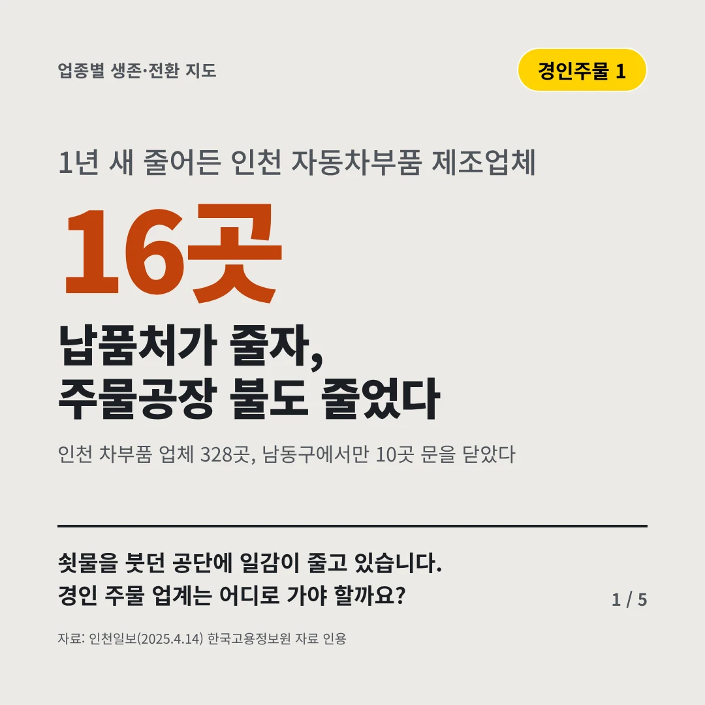
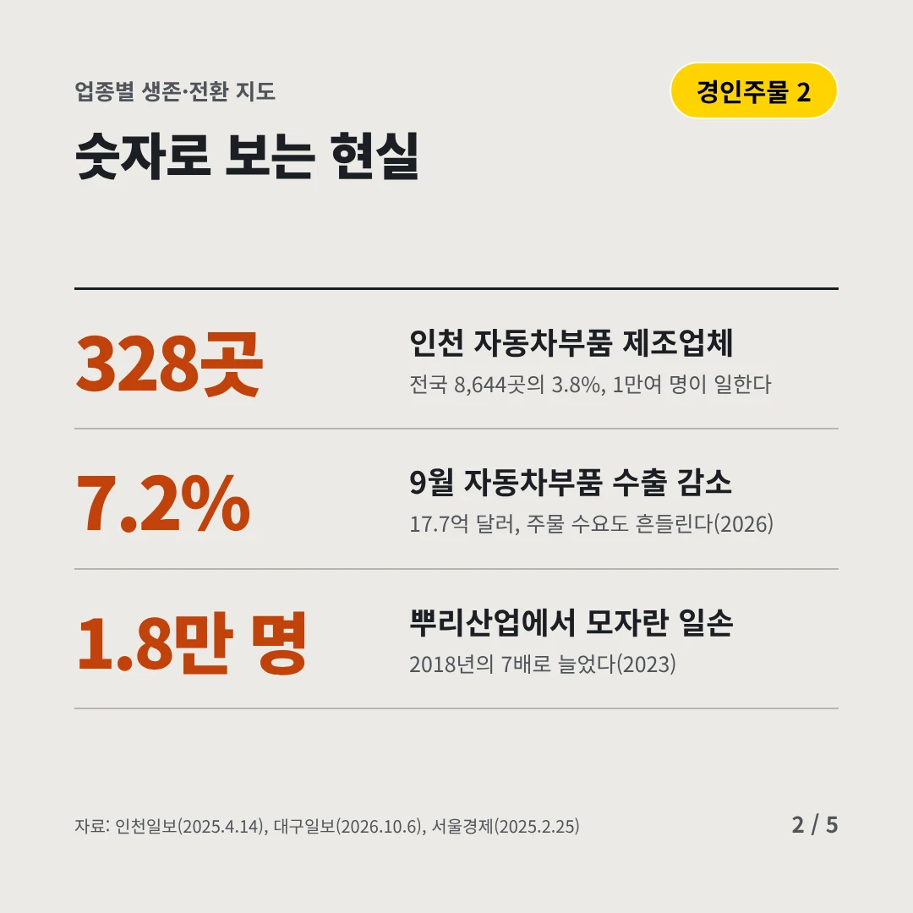
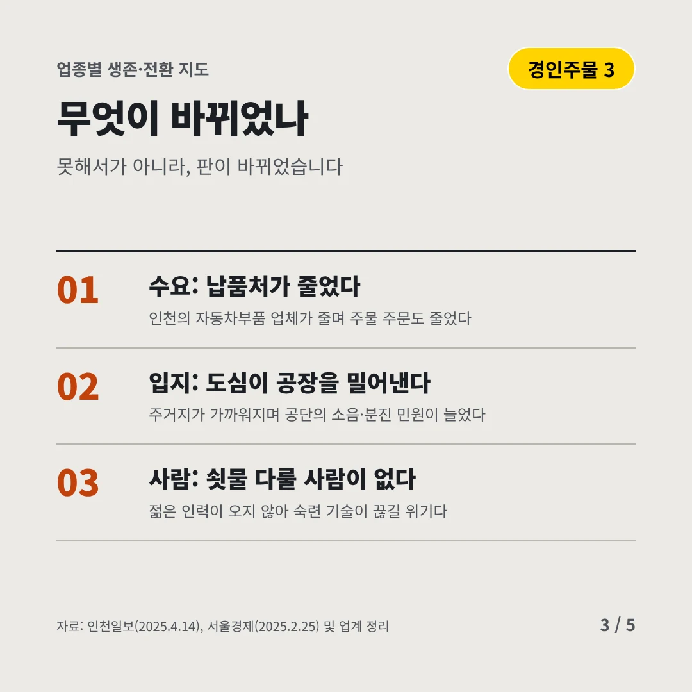
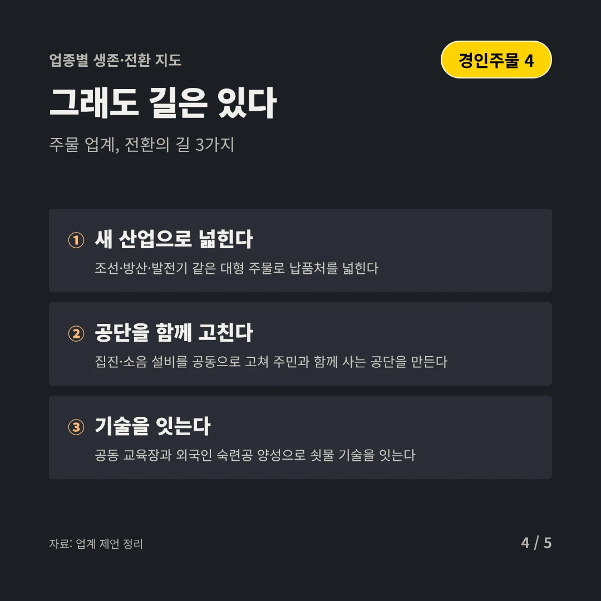
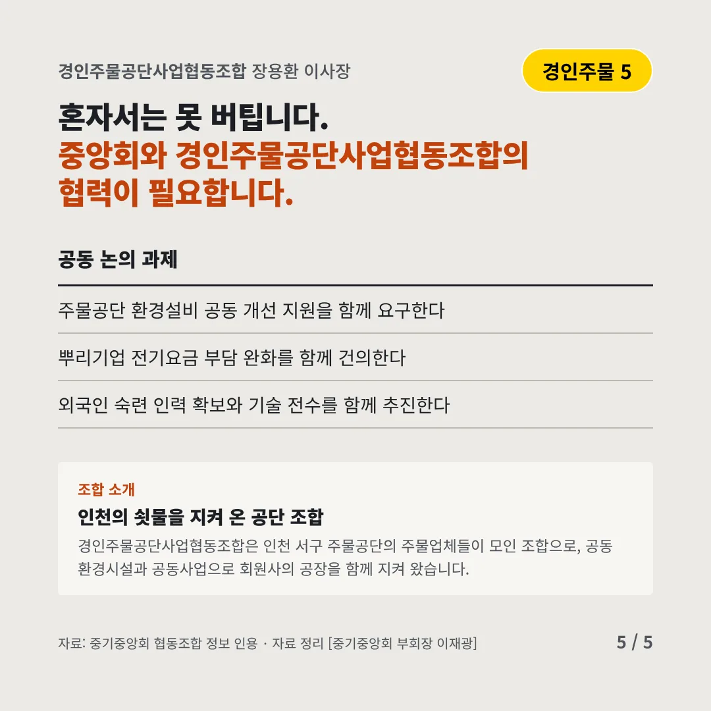
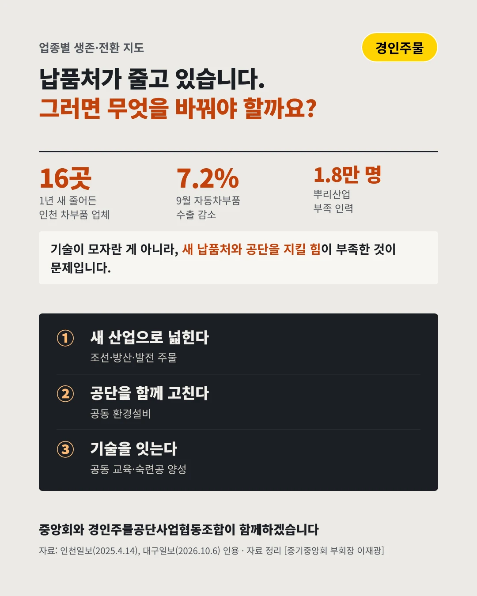

경인주물공단사업협동조합
납품처가 줄자, 주물공장 불도 줄었다
16곳 1년 새 줄어든 인천 자동차부품 제조업체






쇳물을 붓던 공단에 일감이 줄고 있습니다. 경인 주물 업계는 어디로 가야 할까요?
숫자로 보는 현실
- 328곳인천 자동차부품 제조업체전국 8,644곳의 3.8%, 1만여 명이 일한다
- 7.2%9월 자동차부품 수출 감소17.7억 달러, 주물 수요도 흔들린다(2026)
- 1.8만 명뿌리산업에서 모자란 일손2018년의 7배로 늘었다(2023)
무엇이 바뀌었나
- 수요: 납품처가 줄었다인천의 자동차부품 업체가 줄며 주물 주문도 줄었다
- 입지: 도심이 공장을 밀어낸다주거지가 가까워지며 공단의 소음·분진 민원이 늘었다
- 사람: 쇳물 다룰 사람이 없다젊은 인력이 오지 않아 숙련 기술이 끊길 위기다
그래도 길은 있다
- 새 산업으로 넓힌다조선·방산·발전기 같은 대형 주물로 납품처를 넓힌다
- 공단을 함께 고친다집진·소음 설비를 공동으로 고쳐 주민과 함께 사는 공단을 만든다
- 기술을 잇는다공동 교육장과 외국인 숙련공 양성으로 쇳물 기술을 잇는다
한 장 요약

조합 소개
경인주물공단사업협동조합은 인천 서구 주물공단의 주물업체들이 모인 조합으로, 공동 환경시설과 공동사업으로 회원사의 공장을 함께 지켜 왔습니다.
자료: 인천일보(2025.4.14), 대구일보(2026.10.6), 서울경제(2025.2.25)